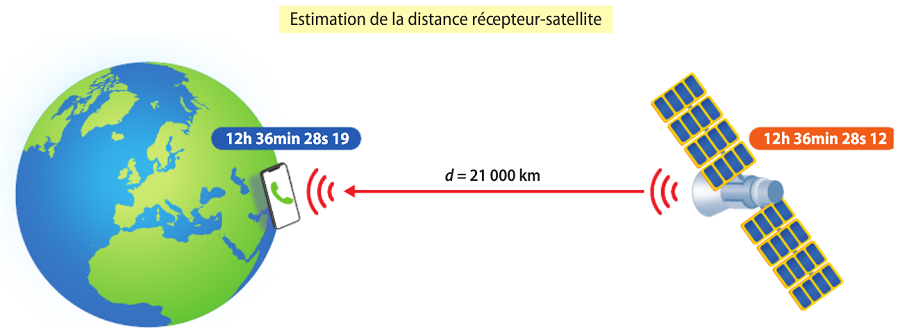
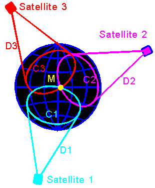

On considère un point M du globe sur lequel un recepteur GPS se situe (voir image ci-contre).
Lorsqu'il receptionne un signal émit par un satellite, le recepteur connait l'heure de l'envoi et l'heure d'arrivée de ce signal.
Il en déduit le temps qu'a mit le signal pour lui parvenir.
Connaissant la vitesse du signal ainsi que le temps de parcours, le recepteur calcule la distance qui le sépare du satellite (à l'aide de la formule v=d/t).

En connaisant la distance entre le point M et le satellite 1 (voir image ci-contre),
on peut en déduire que le point M se situe quelque part sur le cercle C1 représenté sur le globe terrestre.
De la même façon, si l'on connait les distances entre le point M et les deux autres satellites (2 et 3),
on en déduit que le point M se situe également sur deux autres cercles C2 et C3 (voir image ci-contre).
Le point M est donc positionné à l'intersection des trois cercles.
En réalité pour affiner la position, un quatrième satellite est nécessaire afin de déterminer le décalage éventuel entre l’heure du récepteur gps et l’heure des satellites.
En effet, une fois que les trois premiers satellites ont déterminé la position probable du recepeur, une vérification de la distance avec un quatrième satellite permet de repérer une éventuelle incohérence et de la corriger.